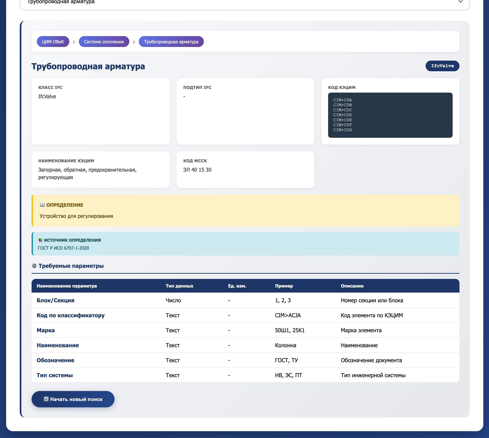
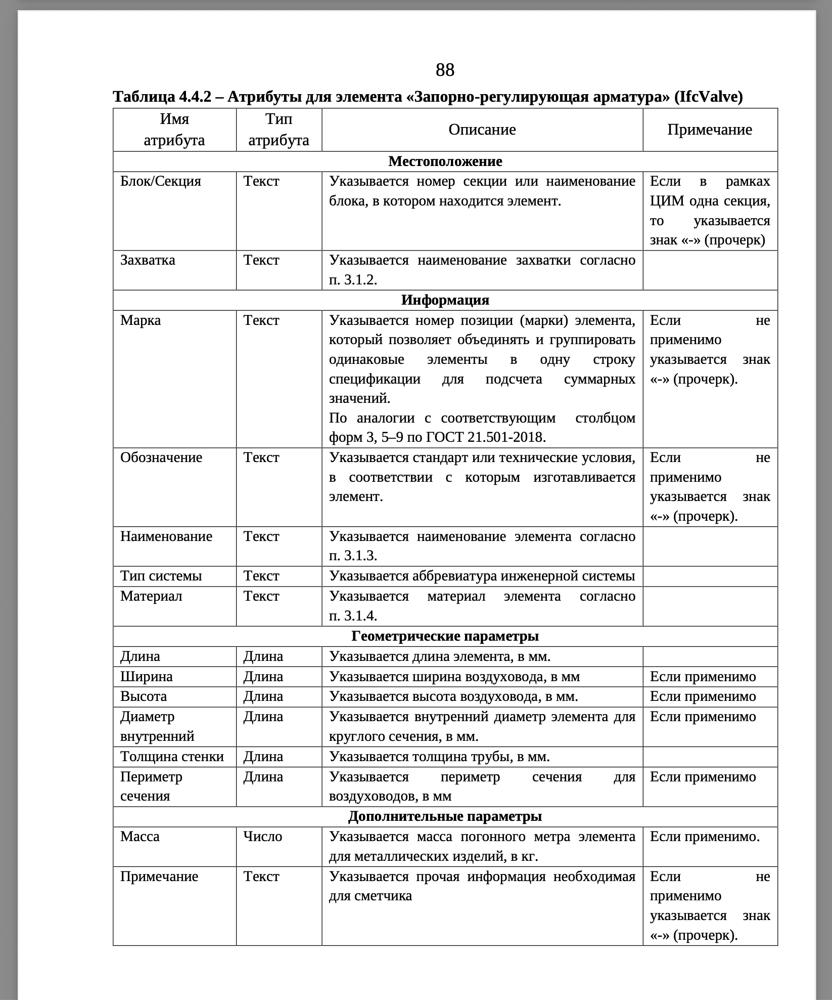
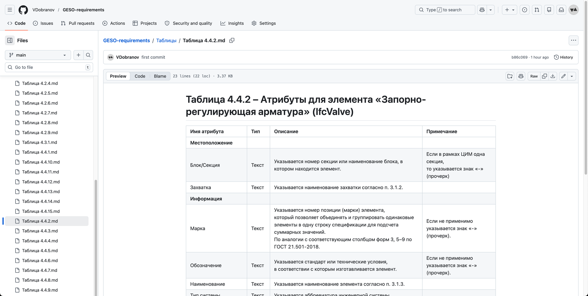
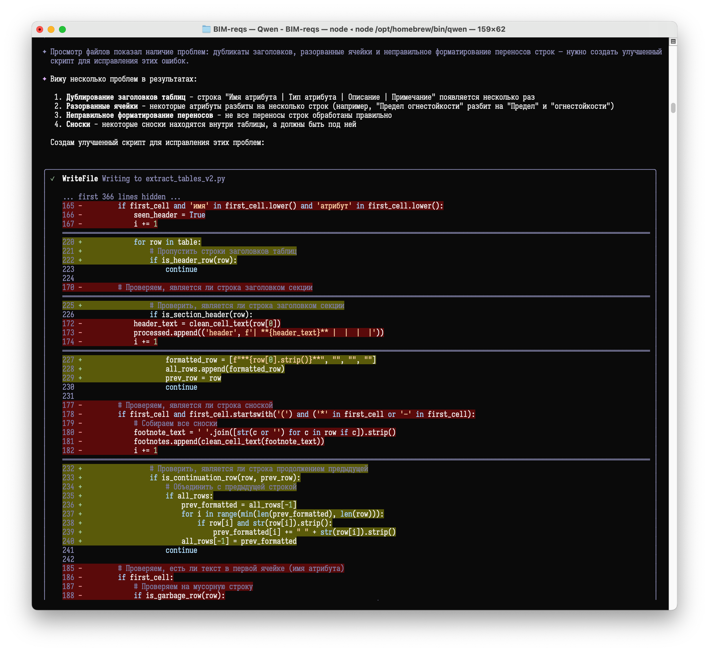

Требования экспертизы → PSet
2026-04-11
Кратко: требования к атрибутам из ТИМ-стандарта Свердловской области теперь есть в Markdown: https://github.com/VDobranov/GESO-requirements
Затеял новый эксперимент: на входе взять табличные требования от какой-нибудь из экспертиз, а на выходе получить готовые шаблоны PSet.
Про получение шаблонов PSet из IDS уже упоминал ранее, т.е. какой-никакой инструмент для последнего шага уже есть.
Осталось придумать, как из таблицы в PDF получить IDS.
Экспертиз много, ТИМ-продвинутых тоже хватает (но, к личному сожалению, среди них нет родной Тюменской области), выбор жертвы пал на требования от Государственной экспертизы Свердловской области. С одной стороны, территориально близки, с другой, достаточно проработанные и «чистые» требования, с третьей, — коллеги активны в ТГ, я за ними послеживаю, всякие интересные штуки рассказывают и показывают.
Например, ТИМ-стандарт в формате HTML, такого я ещё ни у кого не видел. Круто и наглядно. Единственное, смущает, что официальный их ТИМ-стандарт никак не бьётся с тем, что есть в HTML, возможно, просто ещё не доступна его новая версия. Но для нужд эксперимента хватит и предыдущей версии.


И первый шаг — взять все таблицы из PDF и перевести их в формат Markdown, чтобы ллмке (любой) проще было с ними работать.
Собственно, этот шаг сделан, результаты общедоступны: https://github.com/VDobranov/GESO-requirements

В репозитории есть файл extraction_prompt.md, где я писал тот промпт, с помощью которого Qwen мне и создавала весь список .md-файлов. В процессе возникла куча проблем (это же ИИ), по их решениям промпт пополнялся, корректировался и в результате перестал быть универсальным и стал очень заточенным под конкретную PDF. Но, думаю, рихтование промпта под другие требования и другие PDF всё равно будет быстрее, чем переносить эти таблицы вручную.

Дальше самое сложное — «скормить» нейронке эти таблицы и требования к IDS, и научить её переводить одно в другое.
Смотрю в сторону написания навыков для ИИ. Удачи мне.
#IFC #IDS #BIM